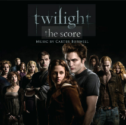
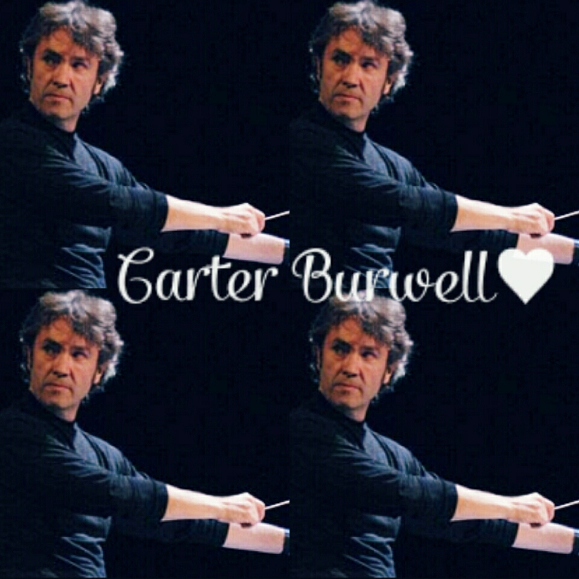
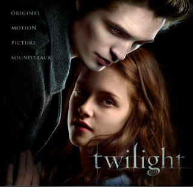
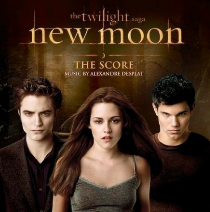
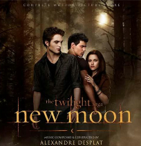
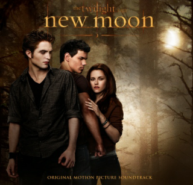
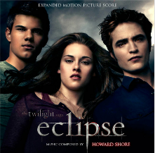
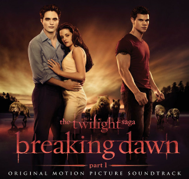
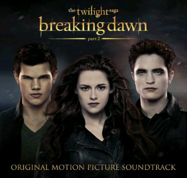

Score y Soundtrack Crepusculo
Música
El score de la película fue compuesto por Carter Burwell. El resto de la música de la banda sonora fue elegida por la supervisora Alexandra Patsavas. El CD de la banda sonora fue puesto en venta el 4 de noviembre por Chop Shop Records en conjunto con Atlantic Records,y debutó en el número 1 de la Billboard 200.
SCORE DE CREPUSCULO
Titulo Original:Twilight(The Score)
Compositor:Carter Burwell
Tipo De Banda Sonora:Score
Año:2008
Formato:MP3
Duracion:47 minutos
- Canciones Del Score
- How I Would Die
- Who Are They?
- Treaty
- Phascination Phase
- Humans Are Predators Too
- I Dreamt Of Edward
- I Know What You Are
- The Most Dangerous Predator
- The Skin Of A Killer
- The Lion Fell In Love With The Lamb
- Complications
- Dinner SWith His Family
- I Would Be The Meal
- Bella's Lullaby
- Nomads
- Stuck Here Like Moom
- Bella Is Part Of The Family
- Tracking
- In PLace Of Someone You Love
- Showdown In The Ballet Studio
- Edward At Her Bed


SOUNDTRACK DE CREPUSCULO
Titulo Original:twilight Soundtrack
Compositor:Varios Artistas
Tipo De Banda Sonora:OST
Año:2008
Formato:MP3
Duracion:48 minutos
- Canciones Del Soundtrack
- Supermassive Black Hole-Muse
- Decode-Paramore
- Full Moon-The Black Ghosts
- Leave Out All The Rest-Linkin Park
- Spotlight(Twilight Remix)-Mute Math
- Go All the Way-Perry Farrell
- Tremble For My Beloved-Collective Soul
- I Caught Myself-Paramore
- Eyes On Fire-Blue Foundation
- Never Think-Robert Pattison
- Flightlees Bird,American Mouth-Iron&wine
Canciones Del Bonus Track
- Let Me Sing-Robert Pattison
- La Traviata-The Royal Philharmonic
- Bella's Lullaby(Remix)-Cartel Burwell
- Claro De Luna-The APM Orchestra

Abi Glez
Score y Soundtrack Luna Nueva
Música
El score de Luna nueva fue compuesto por Alexandre Desplat.
El CD de la banda sonora,fue supervisado por Alexandra Patsavas, incluye únicamente canciones inéditas y salió a la venta el 16 de octubre de 2009 por Chop Shop Records en conjunto con Atlantic Records
SCORE DE LUNA NUEVA
Titulo Original:The Twilight Saga:New Moon(The Score)
Compositor:Alexandre Desplat
Tipo De Banda Sonora:Score
Año:2009
Formato:MP3
Duracion:72 minutos
Canciones Del Score
- New Moon
- Bella Dreams
- Rome & Juliet
- Volturi Waltz
- Blood Sample
- Edward Leaves
- Werewolves
- I Need You
- Break Up
- Memories Of Edward
- Wolves Vs. Vampire
- Victoria
- Almost A Kiss
- Adrenaline
- Dreamcatcher
- To Volterra
- You Are Alive
- The Volterra
- The Cullens
- Marry Me,Bella
- Full Moon

SOUNDTRACK DE LUNA NUEVA
Titulo Original:The Twilight Saga:New Moon Soundtrack
Compositor:Varios Artistas
Tipo De Banda Sonora:OST
Año:2009
Formato:MP3
Duracion:71 minutos
Canciones Del Soundtrack
- Meet Me On The Equinox-Death Cab For Cutie
- Friends-Band Of Skulls
- Hearing Damage-Thom Yorke
- Possibility-Lykke Li
- A White Demon Love Song-The Killers
- Satellite Heart-Anya Marina
- I Belong To You-Muse
- Rosyln -Bon Iver y St. Vincent
- Done All Wrong-Black Rebel Motorcycle Club
- Monsters-Hurricane Bells
- The Violet Hour-Sea Wolf
- Shooting The Moon-Ok Go
- Slow Life-Grizzly Bear
- No Sound But The Wind-Editors
- New Moon (The Meadow)-Alexandre Desplat
- To Volterr
- You Are Alive
- The Volterra
- The Cullens
- Marry Me,Bella
- Full Moon
Canciones Del Bonus Track
- Sed-No Way Out (Disponible en la versión española del disco)
- Thunderclap -Eskimo Joe (Esta canción solo sale en la versión Australiana del disco)
- Frente Al Mar-Ximena Sariñana (Esta canción solo sale en la versión Latinoamericana del disco)
- Solar Midnite-Lupe Fiasco
- All I Believe In-The Magic Numbers
- Die Fledermaus-Duettino: Ach, ich darf nicht hin zu dir (APM Orchestra)
- Wandrers Nachtlied II, Op. 96, No. 3, D.768-Ulf Bastlein
- Meet Me on the Equinox Video Musical-Death Cab for Cutie

Abi Glez
Score y Soundtrack Eclipse
Música
El score de Eclipse fue compuesto por Howard Shore y
El CD de la banda sonora,fue supervisado por Alexandra Patsavas y fue puesto en venta el 8 de junio de 2010 por Chop Shop Records en conjunto con Atlantic Records
SCORE DE ECLIPSE
Titulo Original:The Twilight Saga:Eclipse(The Score)
Compositor:Howard Shore
Tipo De Banda Sonora:Score
Año:2010
Formato:MP3
Duracion:91 minutos
CANCIONES DEL SCORE
CD1
- Riley
- It's Called A Compromise
- Bella's Truck
- Killings
- Florida
- Graduation Gift
- Victoria Escapes
- Edward
- Leah Clearwater
- Imprinting
- The Cullen Plan
- Victoria
- History
- The Newborns
- Kisses
- Rosalie
- The Volturi Are Undecided
- Graduation
- They're Coming Here
CD2
- The Consequences Of Your Actions
- Jasper
- Jacob Carries Bella
- Riley And Victoria
- The Newborns Arrive In Forks
- Mountain Peak
- Jacob
- Inside The Tent
- The Kiss
- The Battle
- Edward Vs. Victoria
- Jane
- As Easy As Breathing
- Jacob's Theme
- Jacob Piano

SOUNDTRACK DE ECLIPSE
Titulo Original:The Twilight Saga:Eclipse Soundtrack
Compositor:Varios Artistas
Tipo De Banda Sonora:OST/p>
Año:2010
Formato:MP3
CANCIONEs DEL SOUNDTRACK
- Metric-Eclipse (All Yours)
- MUSE-
Neutron Star Collision (Love Is Forever)
- The Bravery-
Ours
- Florence Y The Machine-Heavy In Your Arms
- Sia
-My Love
- Fanfarlo
-Atlas
- The Black Keys
-Chop And Change
- The Dead Weather-Rolling In On A Burning Tire
- Beck and Bat For Lashes-Let’s Get Lost
- Vampire Weekend-Jonathan Low
- UNKLE(Feat. The Black Angels)
With You In My Head
- Eastern Conference Champions-A Million Miles An Hour
- Band of Horses
-Life On Earth
- Cee-Lo Green--What Part of Forever
- Howard Shore-Jacob's Theme
Canciones Del Bonus Track
- Battles-The Line
- Bombay Bicycle Club-How Can You Swallow So Much Sleep
- Fanfarlo-"Atlas"(Remix)(Digital Bonus Only)
Pistas Internacionales
- "Magia y Deseo"-Jesse & Joy(Mexico)
- "Eterno Pra Você"-Hori(Brasil)
- "Edge Of My Dreams"-Lisa Mitchell(Australia)
- "Don't You Mourn The Sun"-MiMi(Suiza)
.jpg)
Abi Glez
Score y Soundtrack Amanecer Parte 1
Música
El score de Amanecer Parte 1 fue compuesto por Carter Burwell y
El CD de la banda sonora,fue supervisado por Alexandra Patsavas y puesto en venta el 4 de noviembre de 2011 por Chop Shop Records en conjunto con Atlantic Records
SCORE DE AMANECER PARTE 1
Titulo Original:The Twilight Saga:Breaking Dawn Part 1(The Score)
Compositor:Carter Burwell
Tipo De Banda Sonora:Score
Año:2011
Formato:MP3
Duracion:54 minutos
CANCIONES DEL SCORE
- The Kingdom Where Nobody Dies
- Cold Feet
- What You See In The Mirror
- Wedding Nightmare
- Wolves On The Beach
- Goodbyes
- A Nova Vida
- The Threshold
- Pregnant
- Morte
- Honeymoon In Eclipse
- A Wolf Stands Up
- Two Man Pack
- Don't Choose That
- O Negative
- Hearing The Baby
- Playing Wolves
- Let's Start With Forever
- It's Renesmee
- The Venom
- Hearts Failing
- Biting
- Jacob Imprints
- You Kill Her You Kill Me
- Bella Reborn
.png)
SOUNDTRACK DE AMANECER PARTE 1
Titulo Original:The Twilight Saga:Breaking Dawn Part 1 Soundtrack
Compositor:Varios Artistas
Tipo De Banda Sonora:OST
Año:2011
Formato:MP3
CANCIONES DEL SOUNDTRACK

Abi Glez
Score y Soundtrack Amanecer Parte 2
Música
El score de Amanecer Parte 2 fue compuesto por Carter Burwell y
El CD de la banda sonora,fue supervisado por Alexandra Patsavas y puesto en venta en el año 2012 por Chop Shop Records en conjunto con Atlantic Records
SCORE DE AMANECER PARTE 2
Titulo Original:The Twilight Saga:Breaking Dawn Part 2(The Score)
Compositor:Carter Burwell
Tipo De Banda Sonora:Score
Año:2012
Formato:MP3
Duracion:63 minutos
CANCIONES DEL SCORE
- Twilight Oventure
- A World Bright And Buzzing
- The Lamb Hunts The Lion
- Meet Renesmee
- Here Goes Nothing
- Sparkles At Last
- Catching Snowflakes
- The Inmortal Children
- Merchant Of Venice
- Into The White
- Renesmee's Lullaby/Something Terrible
- A Way With The World
- The Amazon Arrives
- A Yankee Vampire
- Cloud Forest
- Witnesses
- We Will Fight
- Shield Training
- At Bedtime A Child Asks About Death
- Decoding Alice
- The Driving Question
- Present Time
- This ExtraordinaryLife
- Gathering In Snow
- She Is Not Inmortal
- Reading Edward
- Magnifica
- Irina loses Her Head
- Aro's Oration
- A kick In The Head
- Exacueret Nostri Dentes In Filia
- Chasing Renesmee
- A Crack In The Earth
- Aro's End
- That's Your Future
- Such A Prize
-
.png)
SOUNDTRACK DE AMANECER PARTE 2
Titulo Original:The Twilight Saga:Breaking Dawn Part 2 Soundtrack
Compositor:Varios Artistas
Tipo De Banda Sonora:OST
Año:2012
Formato:MP3
Duracion:56 Minutos
CANCIONES DEL SOUNDTRACK
- "Where I Come From"-Passion Pit
- "Bittersweet"-Ellie Goulding
- "The Forgotten"-Green Day
- "Fire In The Water"-Feist
- "Everything And Nothing"-The Boom Circuits
- "A Thousand Years Part 2"-Christina Perri & Steve Kazee
- "The Antidote"-St. Vicent
- "Speak Up"-POP ETC
- "Heart Of Stone"-IKO
- "Cover Your Tracks"-A Boy And His Kite
- "All I've Ever Needed"-Paul MCDonald & Nikki Reed
- "New For You"-Reeve Carney
- "Plus Que Ma prope Vie"-Carter Burwell

Abi Glez